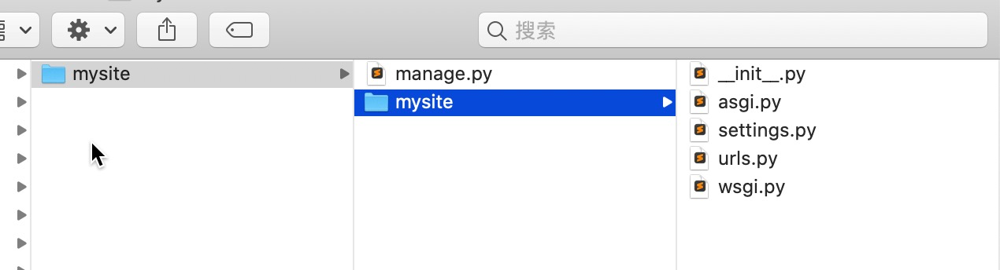
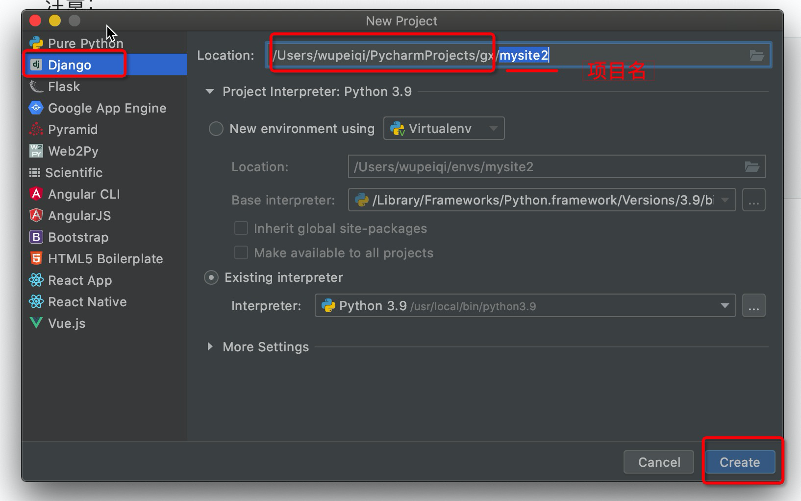
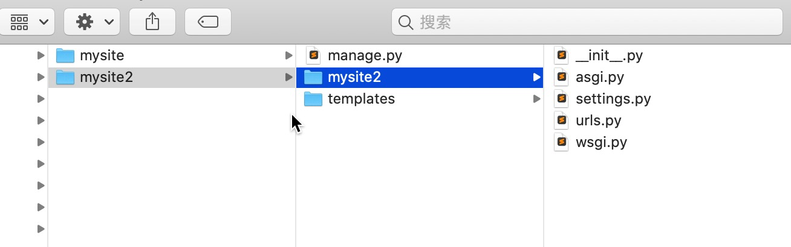
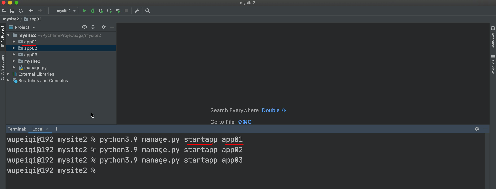
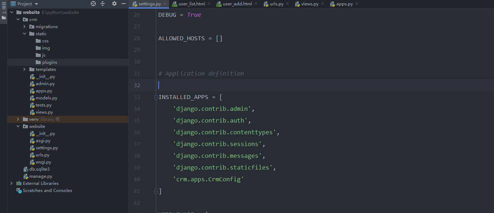
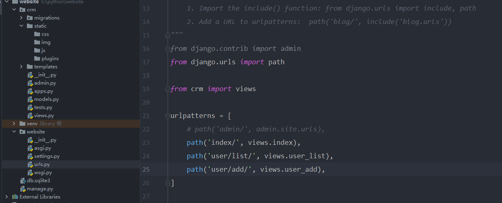
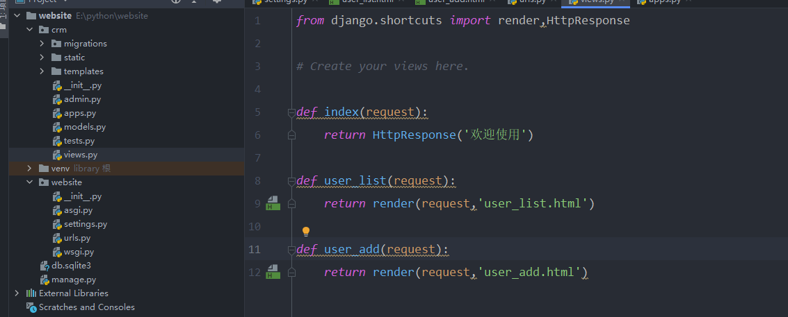
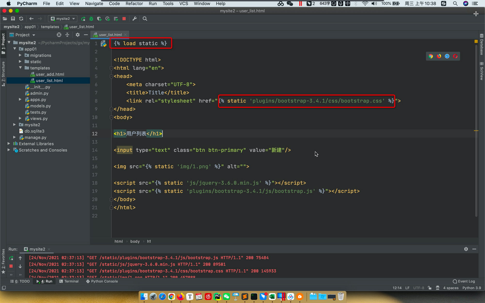

django创建
1. 安装Django
- 安装后Django后，python文件目录结构
c:\python39
- python.exe
- Scripts
- pip.exe
- django-admin.exe 【工具，创建django项目中的文件和文件夹】
- Lib
- 内置模块
- site-packages
- openpyxl
- python-docx
- flask
- django 【框架的源码】
2. 创建项目
2.1 终端创建
- cd至需要放Django项目的文件夹
- 执行创建命令

2.2 pycharm创建


2.3 两种创建方式对比
- 通过终端创建的是标准的Django项目
- 通过pycharm创建的，会在标准的基础上，加一些东西
- 自动创建了templates目录【删除掉】
-
seting.py文件中 【删除掉】

2.4 默认文件介绍
mysite
├── manage.py 【项目的管理，启动项目、创建app、数据管理】【***常常用***】
└── mysite
├── __init__.py
├── settings.py 【项目配置】 【***常常修改***】
├── urls.py 【URL和函数的对应关系】【***常常修改***】
├── asgi.py 【接收网络请求】 【异步】
└── wsgi.py 【接收网络请求】 【同步】
3. 创建APP
- 项目
- app，用户管理【表结构、函数、HTML模板、CSS】
- app，订单管理【表结构、函数、HTML模板、CSS】
- app，后台管理【表结构、函数、HTML模板、CSS】
- app，网站 【表结构、函数、HTML模板、CSS】
- app，API 【表结构、函数、HTML模板、CSS】
...
注意：比较简洁的开发，用不到多app，一般情况下，项目下创建1个app即可。

├── app01
│ ├── __init__.py
│ ├── admin.py 【固定，不用动】django默认提供了admin后台管理。
│ ├── apps.py 【固定，不用动】app启动类
│ ├── migrations 【固定，不用动】数据库变更记录
│ │ └── __init__.py
│ ├── models.py 【**重要**】，对数据库操作。
│ ├── tests.py 【固定，不用动】单元测试
│ └── views.py 【**重要**】，函数。
├── manage.py
└── mysite2
├── __init__.py
├── asgi.py
├── settings.py
├── urls.py 【URL->函数】
└── wsgi.py
3.1 app注册
- 项目目录下的seting.py文件中
- INSTALLED_APP处添加
- app.apps.appclass

3.2 url和函数对应关系
- 在项目目录下的urls.py文件中编写

3.3 视图函数
- app目录下的views.py文件中

3.4 启动项目
- 终端启动
- pycharm启动
4. 前端页面
4.1 html文件
- views文件中指向html文件
- 寻找逻辑是在APP目录下的templates目录下
4.2 templates目录
- 创建在APP目录下
4.3 静态文件
- 在APP目录下创建static目录
- css
- js
- img
- plugins
4.4 静态文件引用

5. 模板语法
- 变量加双大括号
- 索引取值
- 支持循环
- 控制条件
{% if name == '小明'%}
<div>{{ name }}<div>
{% elif name == '小李'%}
<div>{{ name }}<div>
{% else %}
<div>{{ name }}<div>
{% endif %}
5. 请求和响应
5.1 请求
request.method
request.get
request.post
5.2 响应
HttpResponse
render
redirect重定向
重定向的步骤是，请求后返回重定向网站，浏览器再次向重定向网站发请求
用户登录案例
csrf_token
form表单为了安全验证，django内置的验证机制，需要在form表单内添加{% csrf_token %}
- urls
- view.py
from django.shortcuts import render, HttpResponse, redirect
# Create your views here.
def login(request):
if request.method == 'GET':
return render(request, 'login.html')
username = request.POST.get('user')
pwd = request.POST.get('pwd')
if username == 'root' and pwd == '123':
return redirect('https://www.baidu.com')
return render(request, 'login.html', {'error_msg': '用户名或密码错误'})
- login.html
<!DOCTYPE html>
<html lang="en">
<head>
<meta charset="UTF-8">
<title>Title</title>
</head>
<body>
<h1>用户登录</h1>
<form method="post" action="/login/">
{% csrf_token %}
<input type="text" name="user" placeholder="用户名">
<input type="password" name="pwd" placeholder="密码">
<input type="submit" value="提交">
<span style="color: red">{{ error_msg }}</span>
</form>
</body>
</html>